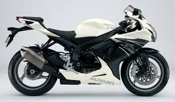
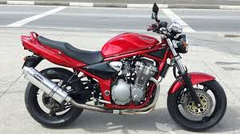

Suzuki Bikes
Bandit 600
GSXR600


Suzuki is another one of the "Big Four" of Japanese motorcycle manufacturers. Suzuki is one of the most
well known motorbike manufacturers in the world, one of the biggest reasons for this is how affordable they are. Suzuki is successful because
they found the right combination of wallet-friendly pricing and performance reliability. They manage this because Suzuki are not only a motorbike
manufacturer, they manufacture ATV's, cars and much more. Suzuki has a high production volume, a high international demand and Suzuki models lag
behind in technology and performance, this is not to say they are not good bikes, just that they don't always have the most advanced technologies
or the most powerful performance parts.
The Bandit 600 is widely known as one of the best starter motorcycles for beginners. This is because it has a good balance of
power and affordability and safety. The Bandit 600 has a 600cc, four stroke, air/oil cooled four cylinder, 4 valves per cylinder engine. It has a maximum
power of 57.4kW at 10,500 RPM with a top speed of 200km/h. It has a 20L fuel tank capacity which is considerably high for a 600cc motorbike and adds
to its weight.
The GSXR600 is considerably more powerful than the Bandit 600 and belongs to the supersport motorcycle family.
It features a 600cc, four stroke, four cylinder, 4 valves per cylinder, liquid cooled engine providing a whopping 93.2kW of power at 13,500 RPM. This is
considerably higher than most 600cc motorbikes and for this reason is highly sought after by thrill seekers and adrenaline junkies alike. With a top speed
of 253km/h, a 17L fuel tank capacity and burning 5,4L/100km, this is a great, reliable, speedy motorbike for the streets and racing alike.